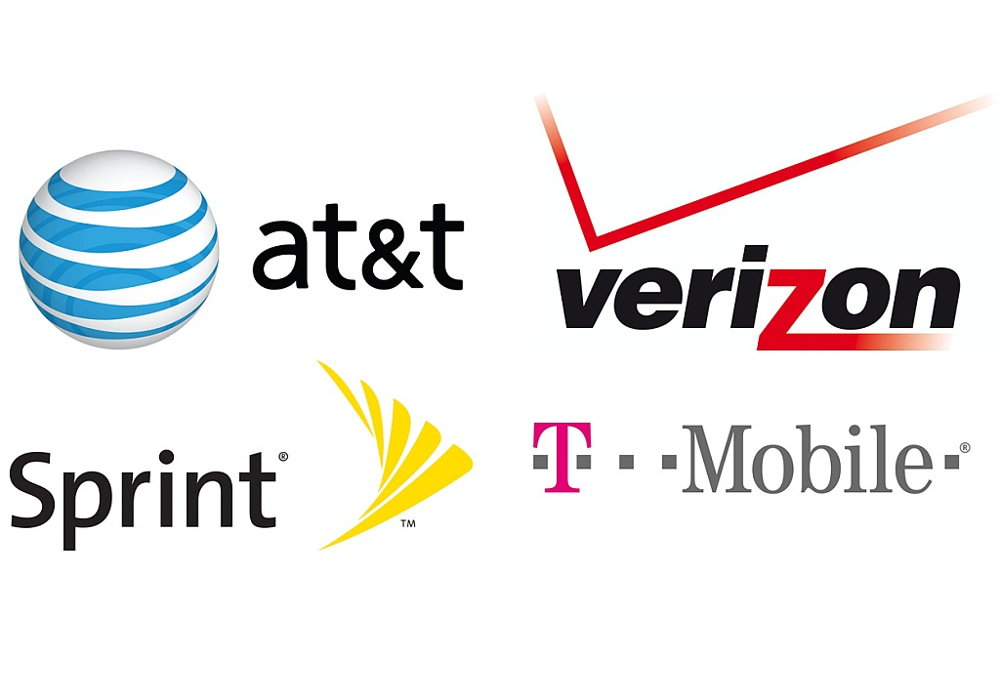

The web is full of noise about "optimizing strategy." The explosion of B2B content marketing has flooded our inboxes with playbooks about improving your marketing and competitive intelligence efforts. While the info can be valuable, these tools and the content they push only focus on how to boost your strengths and overcome your weaknesses.
The thing that's missing in all of this content is how to look at the other half of SWOT. We're talking about Opportunities and Threats.
Some of the obstacles to finding relevant content that covers the "OT" in SWOT is the challenge of separating the signal from the noise in external intelligence, and doing so in a timely way. In this post, we will help you understand how to identify real threats and genuine opportunities, and then outline an action plan to win. After all, we don't want to limit our marketing strategy to what happens inside of the four walls of our business.

Before we jump into the intricacies of Threats and Opportunities, let's tackle two of the most common hurdles that can slow down a good competitive SWOT analysis project.
#1. Separating Signal from Noise
First, we need to separate the signal from noise when qualifying opportunities and threats. Business professionals who focus on competitive and market intelligence should constantly ask themselves questions like; “how relevant is this?” and “how does this impact our bottom line?” It is easy to fall down the rabbit hole of competitive and market intelligence. Once you've started to track other companies’ social media and landing page activity, it becomes addictive. Understanding what insights matter most to your company and for your market is key. If you run an e-commerce company, shipping policies from your competition matter quite a bit. The color of your competition’s web fonts matter less. Prioritize intel that impacts the competition’s ability to win (or lose) against you. If it is a piece of market intel, the same applies. How will this market intel tangibly help or hurt you?

#2. Timeliness of Intelligence
In line with our signal-to-noise hurdle, it’s also essential to address timeliness when retrieving and acting upon intelligence. Unfortunately, it's not enough to catalog the "OT's" of the world and run quarterly presentations proving that you can spot opportunities and threats. It is pivotal that you can produce insights in a manner that is timely enough to act on and generate impact. In the same way that a Super Bowl ad campaign wouldn’t make much sense in August, old intel about a competitor isn't going to win tons of business. Acting quickly, as well as strategically distributing your insights, can increase the impact of your work.
Consider creating a yearly “market calendar” and start to track important external events and milestones across your organization. However, the best competitive and market strategists make intelligence part of their day-to-day. Rob Bois, Sr. Director of Product Marketing at Fuze, advised, “Staying on top of competitive and industry moves is something you need to do every day to take advantage of intelligence effectively."
You can also use Google Alerts as a lightweight way to catch the biggest news events in your industry or use a more robust competitive intelligence tools to catch every key event in your market. These tools provide you an early cheat-sheet to understand when to expect external forces to impact your business. Coupled with a calendar, you can also front-load your quarterly strategy and plan time and resources accordingly.
Now that we’ve established how important it is to separate signal from noise, as well as act in a timely manner, let’s learn how actively addressing Opportunities and Threats can be transformative for our competitive and market intelligence efforts!
Defining and Identifying Opportunities
Opportunities regularly present themselves in our markets and help us evolve our businesses. The speed with which we identify and capitalize on those opportunities can make all the difference for our long-term success in the market. We must be careful not to confuse these market-driven chances with internally-driven strengths. That misunderstanding can lead to missing out on opportunities, which can make customers and investors wonder if we're keeping up with our market. Are they wrong if we continue to miss? No.
A good way to remember how to distinguish opportunities from strengths: Opportunities will originate from external forces. Our strengths come from within our organization.

A Real World Example:
Just a few years ago, the mobile carrier business model stipulated on contracts. Verizon, AT&T, Sprint, and T-Mobile all worked off of discounting phones, and locking people into service contracts for two years. While consumers may have appreciated the lower phone costs, the inconsistency in fees and service were troublesome from the model's inception. In 2013, T-Mobile changed the game. At the time, new CEO John Legere said that his motivation behind the “Uncarrier” movement and the elimination of contracts was to survive in a crowded market.
“A lot of this started because we were a small company — we still are. There's no way we can out-brand or out-share our voice over AT&T and Verizon, so we created our own atmosphere. Social media became involved, and we started being very noisy, very listened to, and we put them on their heels.”
T-Mobile's removal of all contracts created new expectations for the other three major carriers. Regardless of whether Sprint, AT&T, and Verizon were prepared to change, a change was coming. The mobile market saw significant growth in inexpensive prepaid, contract-less plans in the late 2010’s. Those plans rarely threatened the larger carriers, as they did not have the latest phones to offer with their plans. With that intel, T-Mobile identified a way to disrupt the larger players in the industry: Offer the world’s most popular phones (Apple, Android) with post-paid, contract-less agreements. As Legere stated, he could not out-brand or out-share Verizon or AT&T, so there needed to be a truly disruptive change.
Coming from the back of the pack, T-Mobile’s immediate impact on the other three major carriers was significant. T-Mobile beat Sprint on iPhone sales for 2 consecutive quarters in 2013. When it came to AT&T and Verizon, the largest competition in terms of market share, T-Mobile’s new practices for the same devices, namely the iPhone, forced the carriers to modify negotiating tactics and heavily invest in retraining staff across the United States. What’s more, if you highlight T-Mobile’s market share and 3-year growth prior to and after this change, you find that the Uncarrier took a massive bite out of the mobile services market.

With a real-world example in our rearview mirror, how can we identify other cases and catalog them for our benefit? The mistakes of the competition are not the only opportunities worth watching. For example, if you run a digital advertising agency, the exponential growth in mobile adoption presents an opportunity to reach an order of magnitude more devices than previously possible. If you work in clean energy and your state government has recently qualified your product for major personal and commercial tax breaks, you must capitalize on this chance to grow. Meaningful opportunities can originate from anywhere.
Think critically about:
- Growth of your market: If the products, services, and technology offered by your market as a whole are being universally adopted, great! How can you make sure that you have significant market share as the market reaches critical mass?
- Trending news coverage: Maybe your latest product ends up on Good Morning America. Perhaps your latest funding round has garnered local interest in your firm. How will you capitalize?
- Consumer and user trends: Industry publications, blogs, social media, and occasionally mainstream media will catch changes in user behavior and preferences. How can you jump on these trends?
- Influencer-generated content: Whether it’s a big name celebrity or a trusted voice in a strong B2B community, influencers are essentially top-of-the-funnel referrals. You’ll want a plan to activate and close on influencer-driven opportunities.
- Viral content: This is similar to news coverage, but much more timely. Virality online does not last longer than a week, so you really have to be on top of social media monitoring to catch these events.
- Competitor's reviews: Competitor reviews can help you decide what features to develop, how to modify your customer service process, or even help inform your sales team!
- Your market disrupts or penetrates other markets: This is your Canon/Fuji to Kodak situation (more to come on that). Be prepared to take customers of old and dying technology when the time comes.
- Competition failure: You competition is failing to compete. They may have issues with sales processes, an unstable executive team, or inferior products. Learn from their mistakes and keep your head above water.
- Competitive stagnation: This is a precursor to competitive failure. Be prepared to act before the fall of your competitors to gain even more of their previous customers.
- Governmental / policy changes: Sometimes regulatory changes occur in your favor. If you create breakthrough medical treatments and the FDA approves of your practices - you just got the green light to move forward!
- Economic growth, increase of demand: More money in the market means that non-essential products and services get a boost. How can you take advantage of this newly generated interest?
- Growth of supportive/ancillary/complementary products and services: Manufacturers of electric guitar strings really like to see the electric guitar market grow. More guitar sales = more string sales.
Defining and Identifying Threats
Threats exist all around us, though it's not all gloom and doom. The environment in which our organizations operate is not something under our control. Because of this, it's crucial to be able to identify and, to the best of our ability, predict threats in the greater marketplace. Consider for a moment how threats within the market can shape the future of that market. Even if the action did not come from within (weakness, by SWOT analysis), it could still create sea change within your organization.
One way to remember how to distinguish threats from weaknesses: Threats will emanate from the environment. Weaknesses will originate from your organization.

A Real World Example:
If you don’t remember what a “Kodak Moment” was, allow me to quickly surmise. This was the old tagline for the Rochester, NY film giant. Kodak was the undisputed market leader in photography and film technology, so much so that quality pictures were referred to as “Kodak Moments.” This was all prior to the digital disruption of the industry that took off in the 80’s and left Kodak’s place at the top of the consumer camera market behind.
One of the more unfortunate parts of this story is that the digital camera was actually invented within Kodak’s walls in 1975 by Steve Sasson.
Kodak has become a classic cautionary tale for those concerned with threats to their businesses. Their competitors, namely Nikon, Canon, and Sony capitalized on the technology by investing on and focusing towards the future, which was digital.
 The Sony Mavica. Released, 1981
The Sony Mavica. Released, 1981
 The Nikon F-501. Released, 1986
The Nikon F-501. Released, 1986
In 1981, Sony developed the first commercially-focused electric camera prototype. By 1986, Japanese competitors were already uncovering the power of single-lens-reflex (SLR) camera technology. In less than 10 years from Sasson’s invention, Eastman Kodak was already behind the curve. Flash forward to the late 90’s and Nikon, Canon, Sony, and Olympus dominate a market of D-SLR (Digital SLR) cameras, and Kodak is left on the outside looking in.
Dissecting the threats to Kodak, we see that what Kodak really missed out on was leveraging proper market and competitive intelligence practices. While the executive team at Kodak did uncover the potential impact of the digital disruption on their business as early as 1981, they did not act quickly enough. In many ways, Kodak’s story is one that could have been changed for the better at many turns. Kodak’s inability to identify threats as those threats emerged, grew, and eventually captured market share caused Kodak to lose money at scale. When you stick your head in the sand, you miss what’s going on around you! Agile and aggressive competition eventually overtook Kodak in the market, ultimately leading them to bankruptcy and significant reduction in company size - even the selling of patents and other significant assets.
Now that we know what a threat looks like out in the wild, how can we use the real-world example to understand other threats? Depending on your business, there are many data points to consider when evaluating the market and potential threats before they hit the evening news. If you are a local restaurateur, watching Yelp reviews are fundamental to understanding the competitive landscape. SaaS-model B2B app? Watch G2 Crowd, Trustpilot, and Capterra to name a few. Brand new mobile app for sending and receiving money? Make sure you regularly audit App Store reviews. Serious threats can emerge from a few foundational landscapes.
Think critically about:
- Decline of your market size: Everyone is losing business. Why? What external forces are causing this? Do you need to pivot in order to survive?
- Emerging competitors: Who is new on the block? What are they doing differently? What can we learn from their fresh perspective?
- Better-positioned alternatives: How is our brand positioning? Where do we stand in the market? What is our brand persona?
- Competitor pricing: How do we match? Are we premium, discount, or industry standard? Are we service-competitive at our price?
- Reviews: Not simply reading reviews, but taking action based on those reviews. Poor competitor reviews can inform sales, marketing, and even HR strategy. How can you modify your positioning based on your competition’s weaknesses?
- New tech disruption: How can we compete with the latest tech? Can we incorporate new tech or innovate?
- Competition success: We’re losing market share and others are gaining. It’s time for a competitive intel audit!
- Governmental / policy changes: New policies can cripple your business if they disrupt your ability to produce and/or sell.
- Economic downturn: If you’re not selling a staple, how do you survive a decrease of demand at scale? How can you convince people that your widget is worth their budget?
- Deterioration of supportive/ancillary/complementary products and services: If you make mousepads and people stop using mice, you need to have a plan to stay afloat!
Let's Create a Plan

It shouldn't shock you to learn that truly mastering opportunity and threat analysis at your organization is going to take significant time and effort. Did you know that not every piece of content out in the web is public and easily searchable? Google will not catch everything! Major news stories highlight content that publications believe will generate interest, and a company’s website only makes up a portion of a company’s digital footprint. Without a solid competitive intel program in place, by the time members of your marketing, sales, or competitive intel teams catch competitive trends, it's likely being addressed internally at the target company. Plus, as leaders we have to assume that our peers have caught these trends as well - meaning, we lose our edge if we wait too long! So how can you gain an advantage? Consider investing in competitive and market intelligence at your organization!
If you're interested in streamlining this process by leveraging the power of AI, machine learning, and expert analysts, schedule a free demo of Crayon.
Creating a competitive and market intelligence strategy is never an "if" for serious leaders. While we would ideally know our competition inside and out from day one, we can't. It would be great to predict market forces before they happen, but generally, we can't. The best that we can do as strategic leaders who require meaningful insights on our competition and market is to have a system in place that we are comfortable using, tweaking, and sharing. Competitive and market intel is not a dictatorship; it is a collaborative activity within an organization. Your process has to be usable: if you can't understand what you're following and why - it's already broken. The system you create must be flexible: if your insights aren't dynamic and changeable, you could be creating a rigid program that will become difficult to alter and improve. We have to be willing to share our work so that our teammates can help us get better. Taking the initiative to promote competitive and market intelligence at your company can show your coworkers that you think outside the box, and the walls of your business.

Answer a series of questions and we'll give you a custom list of high-priority CI best practices.

Related Blog Posts


Popular Posts
-
 How to Measure Product Launch Success: 12 KPIs You Should Be Tracking
How to Measure Product Launch Success: 12 KPIs You Should Be Tracking
-
 The 8 Free Market Research Tools and Resources You Need to Know
The 8 Free Market Research Tools and Resources You Need to Know
-
 How to Create a Competitive Matrix (Step-by-Step Guide With Examples + Free Templates)
How to Create a Competitive Matrix (Step-by-Step Guide With Examples + Free Templates)
-
 The Definitive Guide to Win/Loss Analysis: How to Gather, Analyze, and Act On Win/Loss Data
The Definitive Guide to Win/Loss Analysis: How to Gather, Analyze, and Act On Win/Loss Data
-
 5 Product Launch Examples That Are Worth Studying (+ Tips for Success)
5 Product Launch Examples That Are Worth Studying (+ Tips for Success)